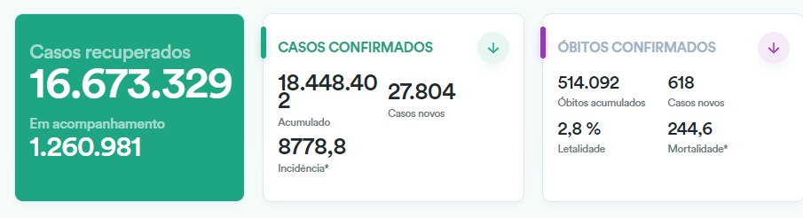

de Maringá
de MaringáBrasil tem registro de 618 mortes e 27.804 novos casos em 24h
De acordo com o Ministério da Saúde, o país registrou nesta segunda(28) 618 mortes por Covid-19 e 27.804 novos casos diagnosticados.

Atualmente o país registra 514.092 óbitos e 18.448.402 pessoas que já foram diagnosticadas com a doença, segundo os dados fornecidos pelos estados ao Ministério da Saúde. São Paulo, Rio de Janeiro, Minas Gerais e Rio Grande do Sul são os estados que contém o maior número de mortes.
Segundo o Ministério da Saúde, o total de pessoas recuperadas da Covid-19 no país é de 16.673.329; dentre elas, 1.260.981 estão em acompanhamento.
Segundo o Conass, a média móvel de óbitos e de novos casos tem tendência de queda.
